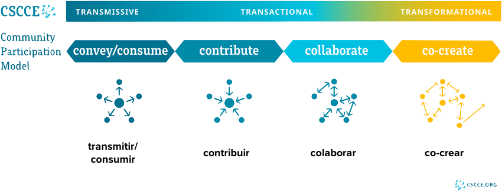

33 Cómo contribuir a proyectos y comunidades abiertas
Estás leyendo la primera edición en progreso y en castellano de este libro, basada en el currículum de formación del programa de rOpenSci.
Este capítulo está siendo migrado desde los materiales del currículum al formato del libro y todavía no refleja la versión final del contenido.
Contenido pendiente de migración: ver https://github.com/ropensci-training/osscontribuir y https://github.com/ropensci-training/osscontribution para el repo fuente de este capítulo.
33.1 Objetivos de aprendizaje
- Reconocer que una contribución a un proyecto o comunidad de código abierto va mucho más allá de escribir código.
- Diferenciar los seis pasos del modelo Pathway to Inclusion (Camino hacia la Inclusión) y reconocer en qué paso se encuentra una persona respecto de un proyecto o comunidad.
- Distinguir las cuatro formas de participación del Modelo de Participación Comunitaria del CSCCE: transmitir/consumir, contribuir, colaborar y co-crear.
- Identificar herramientas y prácticas concretas —usadas por rOpenSci— que ayudan a que más personas conozcan, entiendan, accedan, se sientan parte y se apropien de un proyecto o comunidad.
- Aplicar estos conceptos al propio paquete de R: qué hacer para que sea fácil de descubrir, entender, y para que su repositorio sea amigable a la contribución y la colaboración.
33.2 ¿Qué es, en realidad, una contribución?
Cuando alguien dice “hice una contribución a un proyecto de código abierto”, lo primero que solemos imaginar es a una persona programando: alguien que aportó código de forma significativa y que, para eso, tiene que saber “un montón”. Esta asociación es tan común que muchas personas la dan por sentada, y sin embargo es una idea incompleta que puede terminar siendo una barrera de entrada.
Hay muchísimas otras formas de contribuir y de participar en un proyecto, y esas contribuciones son igual de significativas e importantes para que el proyecto avance. Por ejemplo, cuando rOpenSci organizó mini-hackathons para ayudar a que la gente contribuyera por primera vez, se ofrecían tareas de traducción, de documentación, y de arreglar configuraciones (como GitHub Actions) que no implicaban tocar el código de los paquetes. Aun así, la mayoría de las personas elegía igualmente una tarea relacionada con código, en parte porque ese espacio, con mentoría disponible, se sentía seguro para intentarlo.
Si estás pensando en cómo abrir tu propio proyecto a la participación de otras personas, vale la pena ofrecer explícitamente tareas que no sean de código (documentación, traducción, diseño, difusión, revisión). Aunque el código siga siendo la opción más elegida, nombrar otras formas de contribuir amplía quién se anima a sumarse.
33.3 Comunidades de práctica
Antes de hablar de cómo se contribuye, conviene definir a qué llamamos “comunidad”. Etienne Wenger acuñó el concepto de comunidad de práctica:
Un grupo de personas que comparten una pasión por algo que saben cómo hacer, y que interactúan regularmente con el objetivo de aprender cómo hacerlo mejor.
Esta definición tiene una implicancia importante: no hace falta ser experto o experta para participar. Alguna noción o interés hay que tener, pero el objetivo de la comunidad es justamente mejorar juntos, no llegar ya sabiendo todo. Las comunidades de práctica tampoco tienen por qué estar relacionadas con la programación: un equipo de natación, un club de conversación en un idioma, o un grupo docente que se junta a diseñar contenido son también comunidades de práctica, con la misma estructura de fondo —interacción regular en torno a algo que a todas las personas les interesa mejorar—.
Un paquete de R, un proyecto de software libre o una organización como rOpenSci pueden pensarse, también, como el espacio de una o varias comunidades de práctica.
33.4 El camino hacia la inclusión
¿Cómo llega alguien a formar parte de una comunidad? El modelo Pathway to Inclusion (Camino hacia la Inclusión), propuesto por Alex Bayley, describe seis pasos que una persona atraviesa —sí o sí, en algún orden— para, eventualmente, llegar a ser parte de un proyecto o comunidad. Ninguno de estos pasos es automático, y es común que alguien se quede en el camino sin que eso signifique falta de interés: muchas veces hay barreras concretas que lo impiden.
- Conciencia: escuché hablar de esto. Sé que existe un paquete, un proyecto o una organización como rOpenSci.
- Comprensión: entiendo qué es y cómo sería involucrarme. Ya no alcanza con saber que existe: hace falta entender qué hace y de qué forma yo podría sumarme.
- Identificación: me imagino haciendo esto, siendo parte. Es posible entender perfectamente de qué se trata algo y, aun así, sentir que “no es para mí”.
- Acceso: puedo hacerlo. Aquí entran en juego dimensiones físicas (accesibilidad), financieras (¿puedo pagar?, ¿me piden una visa?) y logísticas (¿el horario del evento es compatible con mi zona horaria?).
- Pertenencia: siento que encajo. A diferencia de la identificación —que es potencial, “me imagino haciéndolo”— la pertenencia ya es real: lo hice, me sentí bien, me sentí segura o seguro, y sé que si algo no lo sé, lo voy a aprender participando.
- Apropiación: me importa tanto que asumo responsabilidad. Es el paso en el que alguien pasa de participar a hacerse cargo de tareas concretas para sostener el proyecto o la comunidad.
Cada uno de estos pasos puede fallar por motivos distintos, y eso importa especialmente en organizaciones con un fuerte componente voluntario. Llegar al último paso —la apropiación— es clave para la sostenibilidad de largo plazo: es de ahí de donde salen los recursos humanos que reemplazan, con el tiempo, a quienes se retiran del proyecto.
Históricamente, los pasos de identificación y acceso fueron una barrera particular para personas de Latinoamérica y para mujeres u otras minorías de género dentro de las comunidades de código abierto en R. Reconocer esas barreras es el primer paso para desarrollar estrategias que ayuden a reducirlas —por ejemplo, dictar contenido en el propio idioma, en lugar de asumir que el inglés es suficiente—.
33.4.1 Herramientas concretas para cada paso
rOpenSci trabaja de forma explícita cada uno de estos seis pasos con herramientas y prácticas concretas. Verlas ayuda a pensar qué se podría aplicar a un proyecto propio.
| Paso | Qué ayuda a lograrlo | Ejemplos de rOpenSci |
|---|---|---|
| Conciencia | Que la gente se entere de que el proyecto existe | Campañas en redes sociales (por ejemplo, “un paquete al día”), presencia en conferencias, meetups y coworkings conjuntos con otras organizaciones |
| Comprensión | Explicar claramente qué es y cómo involucrarse | Sitio web y README completos; documentación generada automáticamente con pkgdown
|
| Identificación | Mostrar que otras personas como uno ya participaron | Sección de “casos de uso” en la web, con historias reportadas por usuarios; entrevistas y blog posts sobre experiencias de uso |
| Acceso | Reducir barreras físicas, financieras y logísticas | Código de conducta; rotación de zonas horarias en eventos recurrentes; grabaciones disponibles para quien no puede asistir en vivo |
| Pertenencia | Que la participación sea posible en el propio idioma | Contenido, procesos y programas (como el peer review) disponibles en español, no solo en inglés |
| Apropiación | Facilitar encontrar una tarea concreta para hacerse cargo | Issues etiquetados como “se busca ayuda” o “good first issue”, listados y filtrables por paquete en la web |
Si querés ver estas herramientas en funcionamiento, visitá la sección de casos de uso de rOpenSci y la lista de issues etiquetados como “help wanted”. Fijate qué tipo de información se pide y cómo está organizada: es un buen punto de partida para pensar cómo replicar algo similar en tu propio repositorio.
33.5 El Modelo de Participación Comunitaria (CSCCE)
Mientras que el Camino hacia la Inclusión explica cómo alguien llega a formar parte de una comunidad, el Modelo de Participación Comunitaria del CSCCE (Center for Scientific Collaboration and Community Engagement) describe cómo esa persona participa una vez que ya es parte. El modelo, construido a partir del estudio de numerosas comunidades de práctica con foco en STEM, propone cuatro formas de participación:
- Transmitir / Consumir: la comunidad transmite contenido (un newsletter, un blog, un canal de Slack) y las personas lo consumen, sin necesariamente escribir ni responder. Es, para la gran mayoría de las personas, la puerta de entrada natural: para poder identificarse con algo, primero hay que conocerlo y entenderlo, y eso pasa por consumir información.
- Contribuir: la persona aporta algo de forma individual —traduce un texto, escribe un blog post, hace de mentor o mentora, revisa un paquete, sugiere a alguien para dar una charla—. Es importante notar que, otra vez, esto no se limita al código.
- Colaborar: es similar a contribuir, pero se hace en conjunto con otras personas. Un programa como el de Campeones/as de rOpenSci se ubica más del lado de colaborar que de contribuir, justamente porque se trabaja en grupo.
- Co-crear: las personas se encuentran en el espacio de la comunidad para generar algo nuevo que, probablemente, no habría surgido si no se hubieran encontrado ahí —y que muchas veces termina teniendo valor incluso fuera de esa comunidad—.

Ninguna de estas formas de participación vale “más” que otra: todas son necesarias para que una comunidad funcione. Es normal y esperable que la mayoría de las personas esté, la mayor parte del tiempo, del lado del consumo. Lo interesante es que muchas intervenciones (como un programa de mentoría o de embajadores) pueden recorrer, para una misma persona, todo el espectro a lo largo del tiempo.
33.5.1 Un ejemplo: Joel y Mo
Un caso real, contado por sus propios protagonistas en un blog post, ilustra bien cómo una misma relación puede pasar por distintos modos de participación:
Joel Nitta iba a visitar Oslo, donde vive Mo, para dar un taller. La contactó por el Slack de rOpenSci para invitarla a tomar un café. Mo, que lo había visto dar una charla sobre el paquete targets en una Community Call de rOpenSci, le propuso algo más: ¿por qué no dar un taller sobre targets en su universidad? Joel se dio cuenta de que ese pedido era justo la motivación que necesitaba para actualizar los materiales de un taller que tenía pendiente, y aceptó encantado. El resultado fue un curso nuevo, con el formato de Carpentries, llamado “Teaching Targets With Penguins”, que hoy está disponible tanto para la comunidad de Carpentries como para quien quiera aprender targets desde rOpenSci.
En esta historia:
- En la Community Call, Joel contribuía (dio una charla) y Mo consumía (participó como oyente).
- Al escribir juntos el blog post sobre la experiencia, ambos estaban colaborando.
- Al diseñar el taller con el formato de Carpentries —algo que no existía antes—, estaban co-creando.
La colaboración, como muestra este ejemplo, no ocurre solo entre individuos: también sucede entre organizaciones (en este caso, rOpenSci y Carpentries), y a menudo el resultado termina siendo útil más allá de la comunidad donde se originó.
En rOpenSci, a las personas que asumen un rol activo para que más gente se sume a la comunidad —difundiendo, invitando, presentando gente entre sí, o dando capacitaciones— se las llama “campeones/as” (del inglés champion, más cercano al sentido de “embajador/a” que al deportivo). Las actividades de campeones/as pueden ubicarse en cualquiera de los cuatro modos de participación: desde transmitir en redes sociales hasta co-crear una capacitación nueva para la comunidad.
33.6 Recursos de rOpenSci para participar
rOpenSci documenta de forma extensa sus procesos de participación, tanto para facilitar el onboarding de personas nuevas como para que otras organizaciones puedan tomar ideas. Algunos de los recursos disponibles son:
- Guía de Contribución de la Comunidad rOpenSci: describe las distintas formas de participar, organizadas según lo que a cada persona le interesa (descubrir, conectar, aprender, construir, ayudar).
- Guía del Blog de rOpenSci: explica cómo escribir y editar contenido para el blog, que además está indexado por Google Scholar y puede vincularse al ORCID de quien escribe.
- Paquetes rOpenSci: Desarrollo, Mantenimiento y Revisión por Pares: la guía de referencia para desarrollo de paquetes y para el sistema de revisión por pares (peer review), con actualizaciones periódicas.
- Guía de localización y traducción de rOpenSci: describe cómo y por qué se traducen y localizan los recursos, respetando los acuerdos particulares que cada comunidad lingüística fue construyendo.
33.7 Aplicando estos conceptos a tu propio paquete
Una vez entendidos estos dos modelos, la pregunta natural es: ¿cómo se traduce todo esto en acciones concretas sobre un paquete de R?
33.7.1 Transmitir: que la gente sepa que tu paquete existe
- README completo: explicá con claridad qué hace tu paquete, cómo se instala y cómo se empieza a usar. Incluí ejemplos o casos de uso, y enlaces a publicaciones, charlas o proyectos donde ya se haya usado.
- Repositorio fijado (pinned) en tu perfil de GitHub: para que quien visite tu perfil pueda encontrarlo rápidamente entre el resto de tus repositorios.
-
R-universe: crear un universo genera automáticamente los binarios de tu paquete para que se pueda instalar con
install.packages()de la misma forma que si estuviera en CRAN, además de generar artículos, exponer datasets y llevar estadísticas de uso. -
Sitio web de documentación con
pkgdown: si tu paquete pasa a ser parte de la suite de rOpenSci, este sitio se genera de forma automática; si no, podés configurarlo igual para tu propio paquete. - Difusión en redes y foros específicos de R: Mastodon, LinkedIn, R-bloggers y R Weekly suelen tener secciones para anunciar nuevos paquetes.
- Charlas y Community Calls: presentar tu paquete en un grupo de usuarios de R, un capítulo de RLadies+, una conferencia de tu disciplina o una conferencia específica de R (como LatinR) ayuda a que se conozca.
- CRAN Task Views: si tu paquete encaja temáticamente en una de estas listas oficiales de CRAN, podés proponer con un pull request que se agregue.
33.7.2 Contribuir y colaborar: hacer tu repositorio amigable
Para que un repositorio invite a la contribución y la colaboración, conviene incluir al menos tres elementos:
-
Código de conducta (
CODE_OF_CONDUCT.md): se puede agregar fácilmente conusethis::use_code_of_conduct(), que usa como base el Contributor Covenant (disponible en muchos idiomas). Si tu paquete pasa el peer review de rOpenSci, se utiliza el código de conducta de rOpenSci, respaldado por su comité. -
Licencia OSI (
LICENSE.md): una licencia compatible con software libre. MIT y GPL son de las más elegidas para paquetes de R. -
Guía de contribución (
CONTRIBUTING.md):usethis::use_tidy_contributing()genera una plantilla a partir de la guía del tidyverse, que después podés adaptar a tus propias preferencias.
En tu propio paquete (o en el paquete que estés usando en tus capacitaciones), probá agregar:
- Un código de conducta, con
usethis::use_code_of_conduct(). - Una guía de contribución, con
usethis::use_tidy_contributing()como punto de partida.
Adaptá el contenido de la guía a tus propias decisiones: ¿qué estilo de código usás?, ¿preferís que primero se abra un issue antes de un pull request?, ¿cómo vas a reconocer las contribuciones que recibas (como autoría, como agradecimiento)?
Una guía de contribución también es el lugar indicado para declarar el alcance de tu paquete —qué vas a desarrollar y qué no— y, opcionalmente, una declaración de ciclo de vida que explicite qué se va a trabajar a corto y a largo plazo, y qué directamente no está planeado. Ser explícito con estos límites no es un gesto poco amigable: al contrario, evita malentendidos y ahorra tener que responder la misma pregunta una y otra vez. Como suele decirse, claridad es amabilidad.
Este mismo criterio aplica incluso cuando el paquete está construido sobre un dataset cerrado o que no va a cambiar (por ejemplo, datos de un censo o relevamiento ya finalizado): las contribuciones igual pueden orientarse a nuevas funciones que operen sobre esos datos —nuevos cálculos, nuevas salidas, nuevas visualizaciones— aunque el dataset en sí no se modifique. Definir de antemano un proceso para decidir qué pedidos se van a implementar (por ejemplo, revisar los issues abiertos una vez cada tantos meses) ayuda a manejar expectativas de ambos lados.
33.7.3 Gestión de issues
Una vez que el repositorio invita a la participación, conviene facilitar que esas contribuciones lleguen de forma ordenada:
- Plantillas de issue: ayudan a que quien reporta un error o pide una funcionalidad complete la información que necesitás para poder ayudar.
- Etiquetado de issues: etiquetas como help wanted o good first issue funcionan como una señal explícita hacia potenciales colaboradores, especialmente hacia quienes están dando sus primeros pasos.
- Fijar (pin) issues: de la misma manera que se puede fijar un repositorio en el perfil, se pueden fijar hasta tres issues en la parte superior de un repositorio, lo cual ayuda a comunicar cuáles son las prioridades del proyecto.
33.7.4 Recursos adicionales para colaborar y co-crear
- Sección de la Guía de Desarrollo sobre trabajar con colaboradores.
- Blog post: Ideas de Marketing para tu Paquete.
- Community Call: Configura tu Paquete para Fomentar una Comunidad.
- Respuestas guardadas de GitHub, para reutilizar respuestas amables y frecuentes sin tener que reescribirlas cada vez.
33.8 Para recordar
- Contribuir no es sinónimo de programar: hay muchas formas igual de valiosas de participar en un proyecto o comunidad.
- El Camino hacia la Inclusión (conciencia, comprensión, identificación, acceso, pertenencia, apropiación) ayuda a entender en qué punto puede estar quedándose una persona que quiere sumarse a tu proyecto, y qué barrera concreta habría que trabajar.
- El Modelo de Participación Comunitaria del CSCCE (transmitir/consumir, contribuir, colaborar, co-crear) ayuda a pensar en qué modo está participando alguien, y que ese modo puede cambiar con el tiempo, tanto a nivel individual como entre organizaciones.
- Ninguna decisión sobre cómo recibir contribuciones está escrita en piedra: podés empezar con una forma que te resulte cómoda y ajustarla más adelante.